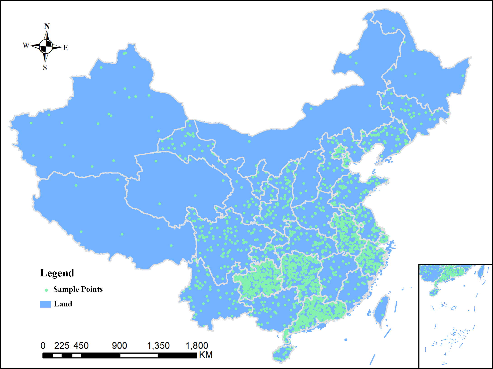
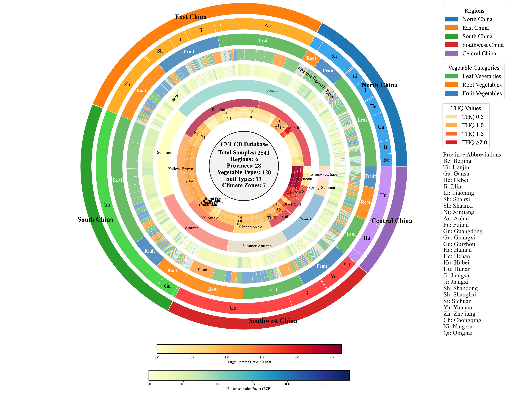
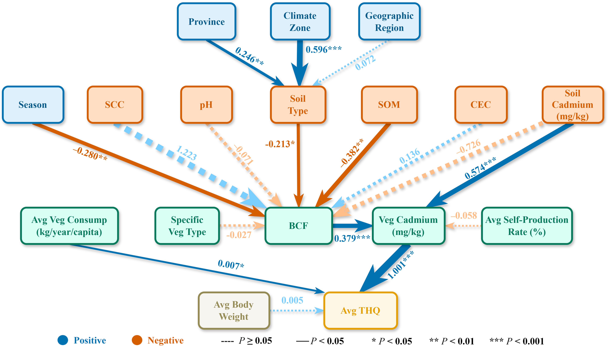
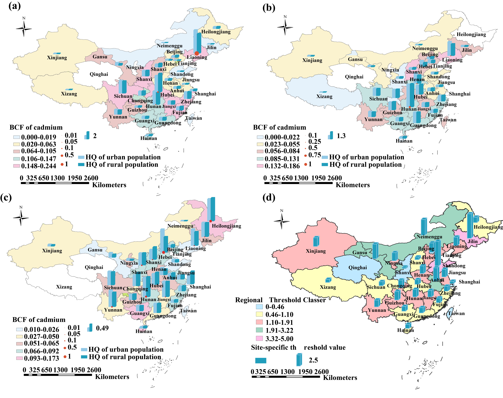

中国蔬菜镉含量与人体健康风险数据库
Chinese Vegetable Cadmium Contamination Database (CVCCD)
专业学术性数据库，用于查询、分析与可视化中国各地区蔬菜中的镉污染及其对人体健康的风险评估
数据加载中，请稍候...
统计分析 (基于筛选结果)
注：统计时已剔除土壤Cd含量最高的5%异常值样本。
Soil Cadmium (mg/kg)
- -
范围: - -
样本量: 0
样本量: 0
Vegetable Cadmium (mg/kg)
- -
范围: - -
样本量: 0
样本量: 0
pH
- -
范围: - -
样本量: 0
样本量: 0
SOM
- -
范围: - -
样本量: 0
样本量: 0
CEC
- -
范围: - -
样本量: 0
样本量: 0
Urban THQ (Male)
- -
范围: - -
样本量: 0
样本量: 0
Urban THQ (Female)
- -
范围: - -
样本量: 0
样本量: 0
Rural THQ (Male)
- -
范围: - -
样本量: 0
样本量: 0
Rural THQ (Female)
- -
范围: - -
样本量: 0
样本量: 0
研究数据可视化分析
以下图表展示了中国蔬菜镉污染的关键分析结果，包括空间分布、风险评估和路径分析。

图1: 数据点分布图
中国各省市蔬菜镉污染采样点的空间分布情况

图2: 数据库结构拓扑图
以环状图展示数据库的结构和各元素之间的关系

图3: 镉健康风险路径分析
展示影响蔬菜镉含量和人体健康风险的各因素间的路径关系

图4: 健康风险流向机制
通过桑基图展示蔬菜镉污染到人体健康风险的流向机制

图5: CVCCD风险评估
中国蔬菜镉含量数据库风险评估综合分析

图6: 主要蔬菜类别分布
数据库中不同蔬菜类别的分布比例
数据可视化 (基于筛选结果)
a) 区域土壤与蔬菜镉含量分布
b) 不同蔬菜类别的生物富集系数(BCF)对比
c) 镉含量最高的15种蔬菜
d) THQ、BCF与蔬菜镉含量时间趋势
e) 省份THQ风险等级对比（所有人群）
f) 季节对蔬菜镉含量和BCF的影响
g) 土壤类型对镉转移的影响
h) 健康风险等级分布
数据表格
| 省份 | 蔬菜大类 | 具体蔬菜 | 土壤类型 | 土壤镉含量 (mg/kg) | 蔬菜镉含量 (mg/kg) | pH | SOM | CEC | 城市THQ(男) | 城市THQ(女) | 农村THQ(男) | 农村THQ(女) |
|---|---|---|---|---|---|---|---|---|---|---|---|---|
| 数据加载中... | ||||||||||||